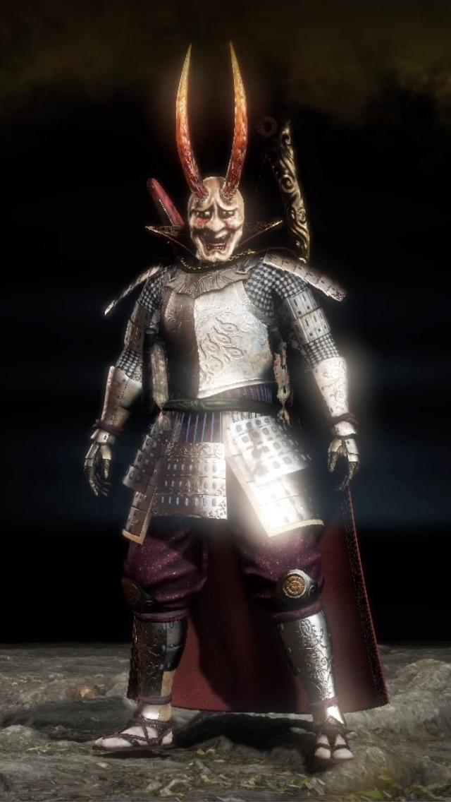

reason 1: this mf
.jpg)
reason 2: splitstaff is a weapon in it
reason 3: you can make cool armors such as this
reason 4: the music is magnificent
reason 5: there aren't many unnecessary gank bosses
reason 6: the story is honestly very good and it's pretty interesting to follow through
reason 7: the graphics are quite underrated
reason 8: the fighting is super complex but not too hard to figure out how to do
reason 9: the game is harder than most but it's hard in a fair way
and finally reason 10: it's honestly super fun
the game has an online co-op that holds up to three players total and
technically an online clan war system where you have to get a certain currency called "glory" and the "clan" that has the most after the war is over wins more glory
honorable mentions: you don't have to pay 40€ extra for the DLCs because if you buy it from steam, epic games or someplace else it should be the "complete" edition if it's on PC
slight sneak peak to the game
games overall rating would be 10/10 would recommend (own opinion)
my opinions on the DLC's
The story of Tengu's Disciple is: A great battle has taken place at Yashima in the late Heian period. As a visitor in Yashima, our protagonist finds a shrine possessing a mysterious whistle called the Sohayamaru. Upon inspection, the whistle shines radiantly as the shadow of Yokai can be seen lurking in the background. It is revealed that whenever wars take place, heroes wielding the Sohayamaru will head into battle in order to restore peace back into this land.
The story of Darkness in the Capital is: In order to unravel the mysteries surrounding the history of the Sohayamaru, our protagonist ventures to Kyoto City and discovers a shrine furnished with an old worn-out box. Upon inspection, the Sohayamaru once again shines brilliantly and the protagonist is whisked away to the middle of the Heian Period, landing in an ancient version of the capital. Contrary to its name “Heian Palace,” which means peace and tranquility, ancient Kyoto was terrorized by countless Yokai during this time period. However, there existed many heroes who were brave enough to oppose these demons. Among them were the most preeminent demon slayer and the strongest sorcerer in history, along with their subordinates and colleagues fighting at their side. Our protagonist joins forces with these famous heroes in order to quell the unrest and destruction caused by the Yokai hordes, while learning more about the connections between an even more distant past and the present time period from which they came.
The story of The First Samurai is: The First Samurai brings the protagonist to the Suzuka Pass during the beginning of the Heian Period. In the climactic 3rd expansion of the Nioh 2 saga, the protagonist will once again confront their arch-nemesis, Otakemaru.